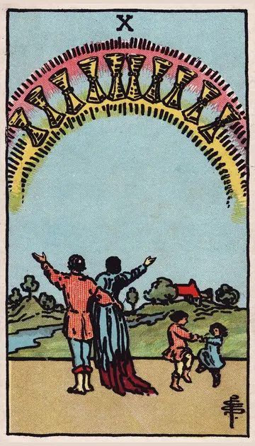

正位置カップの10の正位置
キーワード：幸せ・家族・心の平和
恋愛
心から幸せを感じられる、安定した関係を築ける時です。
相手の気持ちあなたとの将来を、幸せに思い描いているようです。
この先結婚や将来を考える関係に、進みそうです。
アドバイス二人の将来を、楽しく話し合ってみましょう。
気をつけること幸せの形に、こだわりすぎないように。
この先結婚や将来を考える関係に、進みそうです。
アドバイス二人の将来を、楽しく話し合ってみましょう。
気をつけること幸せの形に、こだわりすぎないように。
人間関係
家族や大切な人との絆が深まる時です。
相手の気持ちあなたを、家族のように大切に思っているようです。
この先家族や仲間との絆が深まりそうです。
アドバイス家族や大切な人との時間を、優先しましょう。
気をつけること理想の家族像を、押しつけないように。
この先家族や仲間との絆が深まりそうです。
アドバイス家族や大切な人との時間を、優先しましょう。
気をつけること理想の家族像を、押しつけないように。
仕事・学業
良い仲間に囲まれ、居心地よく働ける時期です。
この先働きやすい環境が整いそうです。
アドバイス職場の人間関係を、大切に育てましょう。
気をつけること居心地の良さに、甘えすぎないように。
アドバイス職場の人間関係を、大切に育てましょう。
気をつけること居心地の良さに、甘えすぎないように。
お金
家計が安定しやすい時です。
この先安心できるお金の状態が続きそうです。
アドバイス家族の将来のために、少し備えましょう。
気をつけること家族の出費を、一人で背負わないように。
アドバイス家族の将来のために、少し備えましょう。
気をつけること家族の出費を、一人で背負わないように。
生活
家族や大切な人と、穏やかに暮らせる時です。
この先温かい毎日が続きそうです。
アドバイス家族で過ごす時間を、大切にしましょう。
気をつけること理想の家庭像に、こだわりすぎないように。
アドバイス家族で過ごす時間を、大切にしましょう。
気をつけること理想の家庭像に、こだわりすぎないように。
今日の運勢
穏やかで幸せな一日になりそうです。
この先心温まる出来事がありそうです。
アドバイス身近な人に、ありがとうを伝えましょう。
気をつけること完璧な一日を求めすぎないように。
アドバイス身近な人に、ありがとうを伝えましょう。
気をつけること完璧な一日を求めすぎないように。
逆位置カップの10の逆位置
キーワード：すれ違い・理想とのずれ・身近な不和
恋愛
理想と現実のずれに、悩みやすい時です。
相手の気持ちあなたとの関係に、理想とのずれを感じているようです。
この先歩み寄れば、穏やかな関係を取り戻せそうです。
アドバイス理想の形より、今の二人の気持ちを大切にしましょう。
気をつけること周りの幸せと比べないように。
この先歩み寄れば、穏やかな関係を取り戻せそうです。
アドバイス理想の形より、今の二人の気持ちを大切にしましょう。
気をつけること周りの幸せと比べないように。
人間関係
身近な人とすれ違いやすい時です。
相手の気持ちあなたと分かり合えていないと感じているようです。
この先話し合えば、わだかまりが解けそうです。
アドバイス身近な人ほど、丁寧に話を聞きましょう。
気をつけること身近な人に甘えて、言葉がきつくならないように。
この先話し合えば、わだかまりが解けそうです。
アドバイス身近な人ほど、丁寧に話を聞きましょう。
気をつけること身近な人に甘えて、言葉がきつくならないように。
仕事・学業
チームの雰囲気が、ぎくしゃくしやすい時期です。
この先雰囲気が、少しずつ良くなりそうです。
アドバイス雰囲気を良くするために、できることから始めましょう。
気をつけること不満を、陰で言わないように。
アドバイス雰囲気を良くするために、できることから始めましょう。
気をつけること不満を、陰で言わないように。
お金
家計のことで、意見が合わない時です。
この先話し合えば、落ち着きそうです。
アドバイス家族で、お金のことを話し合いましょう。
気をつけること一人で決めて、進めないように。
アドバイス家族で、お金のことを話し合いましょう。
気をつけること一人で決めて、進めないように。
生活
家族との暮らしで、すれ違いが起きやすい時です。
この先話し合えば、穏やかになりそうです。
アドバイス家族と、ゆっくり話す時間をとりましょう。
気をつけること身近な人に、言葉がきつくならないように。
アドバイス家族と、ゆっくり話す時間をとりましょう。
気をつけること身近な人に、言葉がきつくならないように。
今日の運勢
家の中で、小さなもめごとが起きやすい日です。
この先夜には和やかに過ごせそうです。
アドバイス家族と、ゆっくり話す時間をとりましょう。
気をつけることささいなことで、言い合いにならないように。
アドバイス家族と、ゆっくり話す時間をとりましょう。
気をつけることささいなことで、言い合いにならないように。
このページの文章は、アプリ「ひとやすみタロット」の結果に使っている文章です。アプリでは、あなたの相談や、カードが出た位置（今の状況・これからの流れ・アドバイス）に合わせて、この中から文章を選びます。逆位置の読み方は逆位置のことをご覧ください。
「カップの10」が出たら、あなたの相談ではどう読む？
アプリでは、質問への答えに合わせて、カードの言葉をあなたの相談に合わせて届けます。
Android 対応・会員登録なし